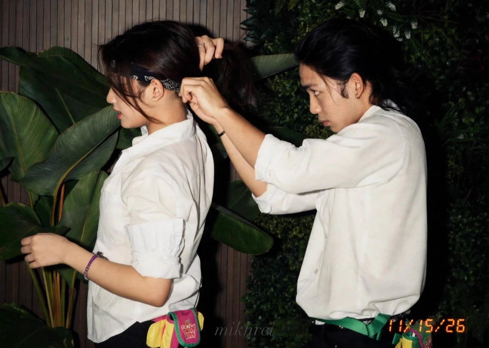

all about
jeolee.
Jeo, Gehlee, and the moments that bring Cupids together.
In the Jeolee loop
Publisher reports, fandom posts, and approved Cupid contributions. Every update keeps its source and original date.
No approved updates in this view yet.
Contribute an updateCommunity updates couldn’t load. The sourced stories above are still available.
Straight from the fanbases.
Public posts from Jeolee Nation, Jeolee Official, and With Jeolee.
View @jeoleenation on X
Choose a feed to see posts from X.
Feeds load directly from X. While this page stays open, they reload at 12 noon and 12 midnight Philippine time; availability is controlled by X.
Moments on repeat.
Browse collectionsjeo & gehlee
some stories deserve a replay.
Pick your kind of kilig.
the moments we keep coming back to.
A little room for more.
Add an X clip to start this collection.
jeolee
for the plot. for the butterflies.
An independent fan space for Jeo + Gehlee.
Clips stay with their original creators on X.